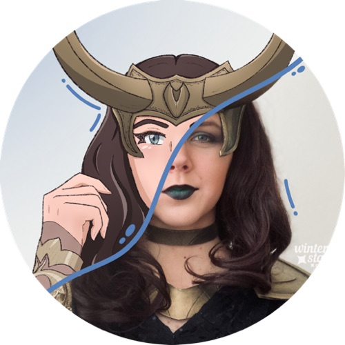

About
About Me
Hello! I’m Emiline, going by the pseudonym ‘Winterstar Art’ on social media. I’m a multifaceted artist currently studying Illustration and Business Management at Brigham Young University, Idaho. I love delving into the realm of otherworldly fantasy with my artwork, creating characters and artwork from other worlds. A lot of my work is inspired by pop culture, and it was through this that I first started drawing.
I’ve had many different interests over the years, creative expression has been one that has stuck with me very firmly, and I’ve done a lot with it, including becoming proficient in areas such as digital art, graphic design, character design, landscape art, and, most recently, animation. I’m always striving to try out and learn new things, and find new ways to take my art and drawing skills to the next level. In addition to being an artist, I'm also a writer, cosplayer, and entrepreneur. I created and am currently running two seperate businesses; one for my art, and one for my cosplays (costume design and creation). I'm always looking to learn new things, and use my talents to both help others, and support myself. I hope to one day turn my creative passions into a full-time career.
Contact
Interested in working with me on a project? Want to commission or hire me? Connect with me below on LinkedIn, or reach out to me personally through my email.
LinkedIn Email